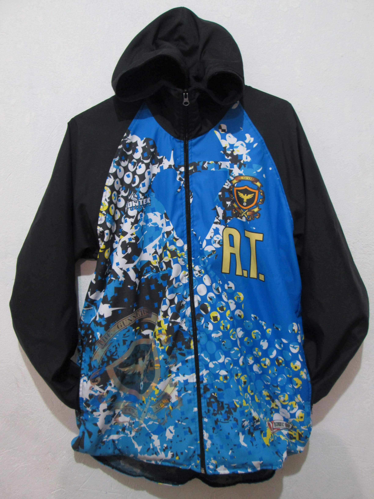

Formando campeones dentro y fuera del campo
En The Gunners Fútbol Club nos apasiona formar jugadores con excelencia deportiva y valores humanos. Nuestro enfoque va más allá del entrenamiento: buscamos forjar líderes dentro y fuera de la cancha.
El club deportivo THE GUNNERS F.C. es un club de formación deportiva en fútbol que promueve actividades formativas y competitivas en dicho deporte, dirigidas a los niños y jóvenes del municipio de Soacha. Generando un aprendizaje, conocimiento y desarrollo integral mediante los fundamentos técnicos, tácticos, y valores en el deportista.
THE GUNNERS F.C. hacia el año 2027 pretende caracterizarse por ser un club líder en su buen desarrollo deportivo, siendo uno de los mejores en su formación integral y competitiva de los niños y jóvenes a través del fútbol en el municipio de Soacha y en Cundinamarca.
Adquiere cualquiera de nuestros productos en nuestro WhatsApp corporativo
